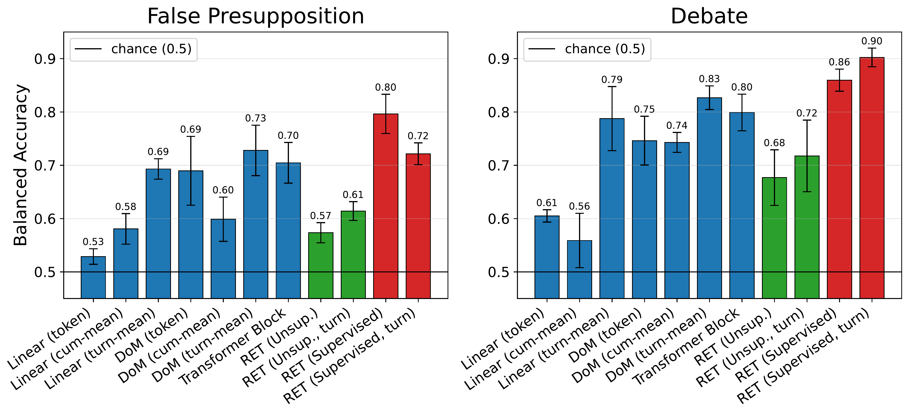

01
Microscopic access is not understanding
We have complete microscopic knowledge of how an LLM computes. But for large interacting systems, a full microscopic account does not by itself reveal the macroscopic organisation needed to explain behaviour, anticipate failures, or intervene.
Across the sciences, the answer to this kind of problem has been effective theories: macro-level descriptions that discard irrelevant microscopic detail while preserving the structure needed for prediction and control. Macrovariables such as temperature and pressure describe a gas without tracking the position or velocity of any individual molecule, and they are directly useful for designing engines and predicting phase transitions. Economic and ecological models capture collective behavior through aggregate variables rather than individual transactions or organisms, supporting forecasting and policy without a microscopic account. A program is physically a sequence of transistor states, yet data structures and control flow describe it completely enough to predict behavior, reason about correctness, and intervene when something goes wrong.
We take LLM interpretability in the same spirit. The model’s hidden activations form a neural substrate, a microstate. We ask whether a learned, low-dimensional macrostate with its own transition law can describe the computation at the level relevant for explanation.
02
Three desiderata for an effective theory of an LLM
Drawing on this effective-theory perspective, we identify three desiderata for an effective theory of an LLM.
Abstraction from microscopic detail
The theory should describe the model in terms of macrovariables that abstract away from the full microscopic state while remaining grounded in it. This is the role played by temperature and pressure in thermodynamics, population-level quantities in biology and ecology, or data structures and control flow in computer science: they are not independent of the substrate, but they describe it at the level relevant for explanation.
Approximately closed dynamics
The macrostate should support its own transition law: once the current macrostate is known, the full microstate should add little information about the next macrostate. The macro-dynamics should be closed enough to support self-prediction, but need not be perfectly closed; residual microscopic effects can be treated as uncertainty, or corrected by re-measuring the macrostate from activations.
Practical relevance
Thermodynamic variables are valuable not merely because they abstract away microscopic details and form a closed description, but because they enable prediction, control, and engineering. Likewise, LLM macrostates should help identify computational phases, characterize transitions between them, predict downstream behavior, and guide interventions — tested empirically against existing tools such as sparse autoencoders and linear probes.
03
Representational Effective Theory
To acquire the effective theory we take a representation learning approach: RET. In this paper, we instantiate it with a BYOL/JEPA-style objective: an encoder fθ maps the hidden-state trajectory h0:t to a low-dimensional macrostate zt, and a predictor Tϕ forecasts zt+1 from zt. See the paper for details.
We show in the paper that this instantiation satisfies the three desiderata. The following sections illustrate the third.
04
The LLM “mental state”
We use mental state operationally: the coarse computational phase the model currently occupies, setting up a problem, manipulating symbols, verifying a partial result, or exploring an alternative path. An effective description of computation naturally operates at this level: macrovariables that abstract away token-local variation, stay stable within a coherent computational phase, and shift at meaningful boundaries. To make this interpretable, we cluster the zt vectors with k-means and use a separate language model only to name the resulting clusters; no phase labels at any point.
Below are the first four random samples from the held-out test set: NuminaMath reasoning traces from GPT-OSS-20B. Each token is coloured by its assigned group (G0–G11). Hover for cluster details; switch tabs for more views.
≈1.6 MB · self-contained
An independent, more powerful model (GPT-5.4 Thinking) given only the raw response text named nine reasoning states with no knowledge of the clustering, and they line up phase-by-phase with the RET groups, suggesting the geometric macrostate clustering recovers real phase structure. See the independent narration ↗
not by surface syntax or word identity
tokens assigned by computational context, not surface meaning
vs. 4.24 for SAE
05
Predicting behaviour before it surfaces
We already saw this qualitatively in the mental-state trajectory: repeatedly, the macrostate switches into a state and the tokens that follow carry out exactly that behaviour. The model enters a disambiguation state, and the next handful of tokens (≈10) are the model pausing to resolve an ambiguity: “Wait, we already added 6… we want >6”. The switch predicts what the model is about to do, rather than merely labelling it afterwards. This section quantifies that with a labelled prediction task: sycophancy, where under repeated user pressure a model abandons a correct or well-justified position. We study two settings. In false presupposition the question embeds a subtly false claim that a non-sycophantic model should refuse to accept; in debate the model must hold an assigned stance against persistent disagreement. We release a large multi-turn dataset for both (6,914 false-presupposition and 7,161 debate conversations).
The task is predictive, not descriptive. Before the model has finished its response for the current turn, we predict whether that turn will end up sycophantic. We make this prediction from the RET macrostate zt and compare it against the same prediction made from the model’s own hidden states under matched supervision. A supervised variant of RET (construction in the paper) is the strongest predictor in both settings, beating every baseline.

06
Steering computation
The unsupervised cluster vocabulary also gives causal handles. An attractor takes a short gradient step that nudges the hidden state so its macrostate moves toward a target cluster; a repulsor pushes away from an avoided cluster. Encoder, cluster centers and grouping are all frozen.
Below is a live steering playground. Pick a prompt and a target (a specific cluster or a whole group, toward or away), then adjust strength, start token, and duration. Strength 0 is the unsteered baseline; every combination is a separately generated run of GPT-OSS-20B.
Loading the steering grid…
Limitation. Steering seems to shift the model among prompt-plausible computational paths rather than creating unavailable ones: for example, when asked to sum 1 to 61, the model uses the closed-form formula despite interventions encouraging enumeration. Higher-level cluster targets are therefore more reliable than fine-grained algorithmic targets: steering toward verification, reframing, finalization, or disambiguation clusters works in the case studies, while low-level algorithmic steering can fail when the target behavior is implausible. Quantitatively, a fixed RET steering recipe toward C30, an exploratory search and disambiguation cluster, adds the corresponding behavioral marker on 30/33 held-out prompts, compared with 20/33 for the best SAE baseline at layer 11 under the same loose marker-presence criterion.
07
Takeaways
LLM computation admits a useful effective theory: a compact, temporally consistent macro-level description of how the model computes. RET yields interpretable mental-state trajectories, enables early prediction of behaviours such as sycophancy, and provides causal handles for steering. The JEPA-style encoder-predictor studied here is one instantiation of the effective-theory perspective, not its definitive form; future work should explore alternative ways of extracting representational effective theories, as well as applications in which macrostates serve as observables for monitoring, control variables for intervention on emerging failure modes, and signals for post-training.
·
Citation
@article{ustaomeroglu2026ret,
title = {Understanding, Predicting, and Steering LLM Behavior via Representational Effective Theory},
author = {Ustaomeroglu, Muhammed and Qu, Guannan},
journal = {arXiv preprint arXiv:2605.09294},
year = {2026},
url = {https://arxiv.org/abs/2605.09294}
}